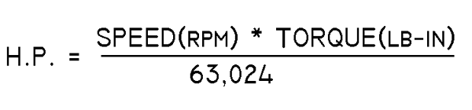

14-Volt, 40-Amp machines are very popular for a large number of light aircraft. Power available from this machine is 14V times 40A yields 560 Watts ouput for the purpose of doing work in the electrical system.
|
Torque and RPM as it relates to Horsepower: We know that any
alternator bolted to an engine takes power to make it operate. Unlike our
ponies that exert a force by pulling, engines put out power by turning
a shaft. In this case, the force is measured as a torque value (some force
acting through some lever arm or radius) and a speed (revolutions per
some time interval. With a little pencil work, one can easily deduce that one horsepower delivered by spinning a shaft is equal to speed x force divided by some constant. In the case of speed in RPM and Force in Pound-Inches, the constant is 63,024 as illustrated in the formula to the right. |  |
|
Power Output: Okay, we're going to put horsepower
into an alternator, what do we want out? We'll, it would be really nice if the
alternator's output voltage were accurately controlled for the maintenance of
a lead-acid battery (14.2 +/- 0.4 volts) and delivered with enough current to power
all the ship's electro-whizzies and still accomplish a timely re-charge of
a heavily discharged battery. 14-Volt, 40-Amp machines are very popular for a large number of light aircraft. Power available from this machine is 14V times 40A yields 560 Watts ouput for the purpose of doing work in the electrical system. |
| Efficiency: We're going to put horsepower in one end of
this gizmo and get Watts out the other end. At some point in time we're
going to be interested in how efficient the alternator is.
The efficiency affects two important design aspects of an alternator
installation. The most obvious is, (1) how much of the engine's total output
power is needed to supply alternator demands. The less obvious fact asserts that
(2) alternators toss off most of their losses in heat. It may be that
the machine will benefit from some consideration for cooling. Efficiency is defined as OUTPUT power divided by INPUT power times 100 to yield a percentage. My math teachers wouldn't let me divide H.P. by WATTS so we'll exploit a conversion deduced by some clever folks a long time ago. One H.P. is the mechanical equivalent of 746 electrical watts. In many venues, suppliers of engines speak of their product's capability to deliver power in terms of watts or kilowatts instead of horsepower. To get horsepower, divide watts by 746. Let us assume our hypothetical 14v/40A alternator has an average efficiency of 65%. This means that for 560 Watts of output, we'll need to provide 560 /.65 = 862 watts of input. Dividing 860 watts by 746 yields 1.15 horsepower. |  |